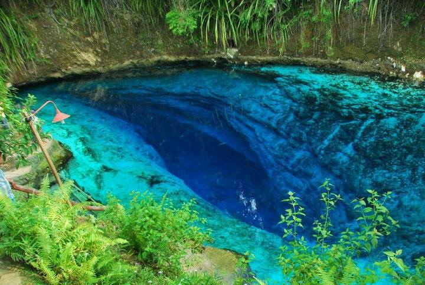
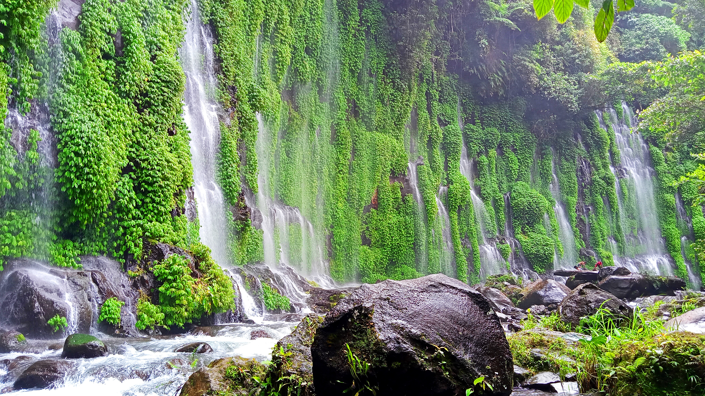
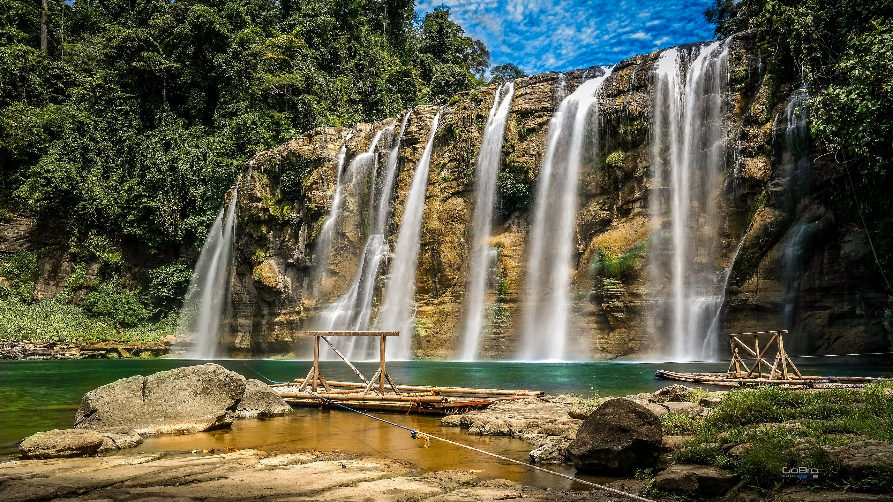
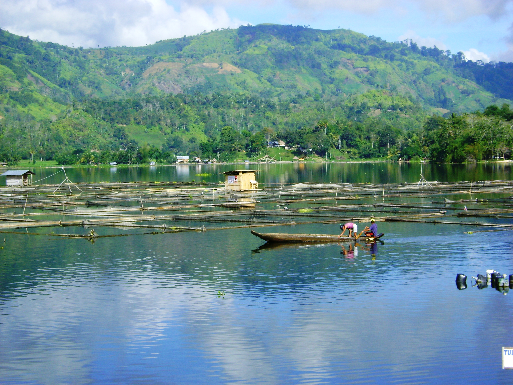
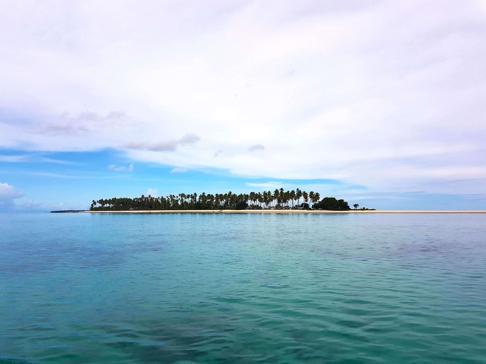
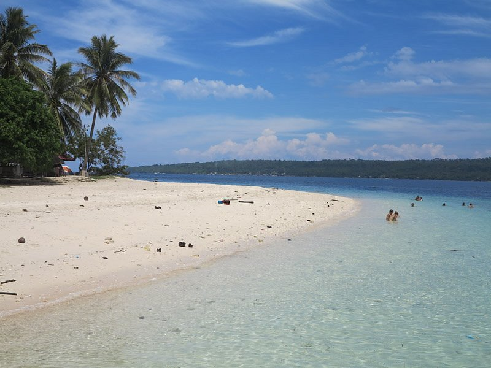
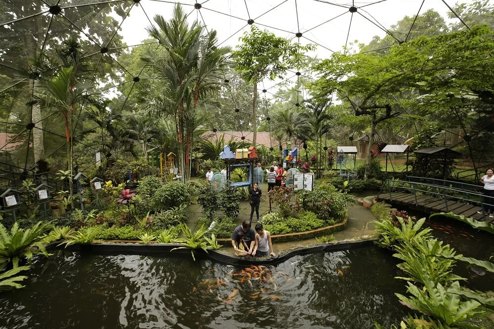
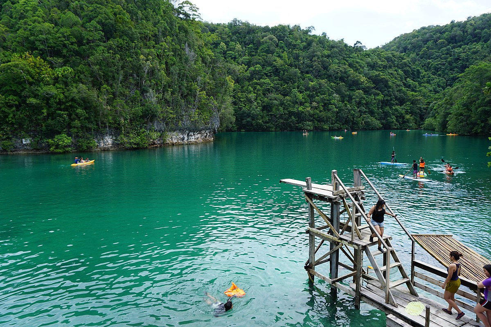

Aliwagwag Falls

Stunning stair-like waterfall system.
Journey into the heart of Mindanao — where waterfalls, rivers, mountains, and untouched jungles reveal breathtaking beauty.

Deep sapphire waters surrounded by ancient forests.

A magical wall of water with no visible source.

The “Niagara Falls of the Philippines.”

A serene lake surrounded by lush mountains.

Home to the longest sandbar in the country.

White sand beach with rich marine life.

Famous for its botanical gardens and Chocolate Museum.

Emerald waters perfect for paddleboarding.
Stunning stair-like waterfall system.
Rose-colored sand made of crushed red corals.
This website showcases 10 Hidden Tourist Spots in Mindanao.
Email: pajaron.rd.bmst@gmail.com